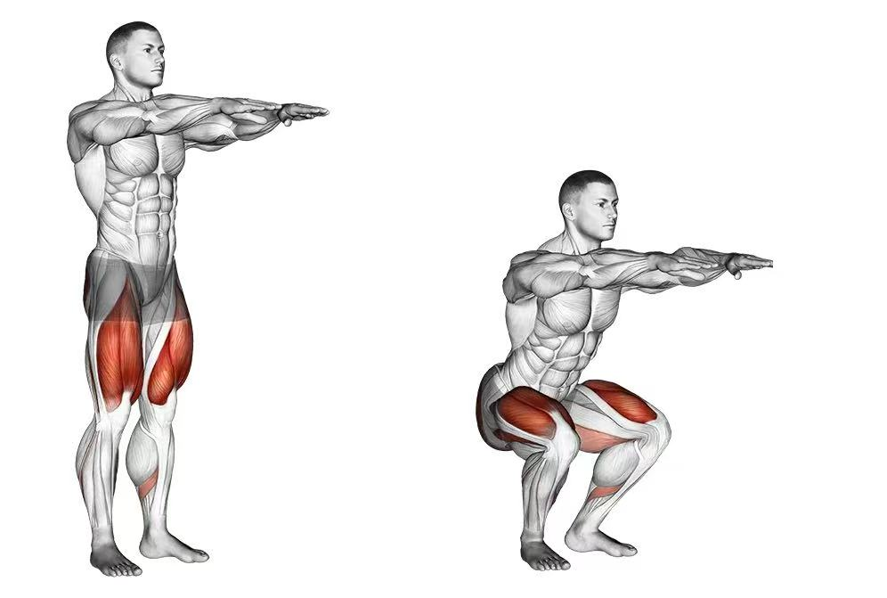
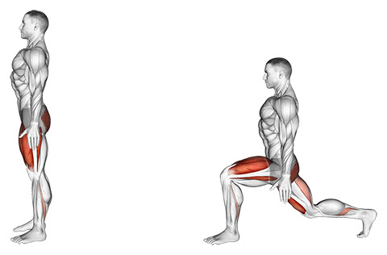
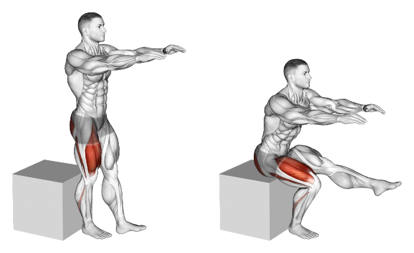
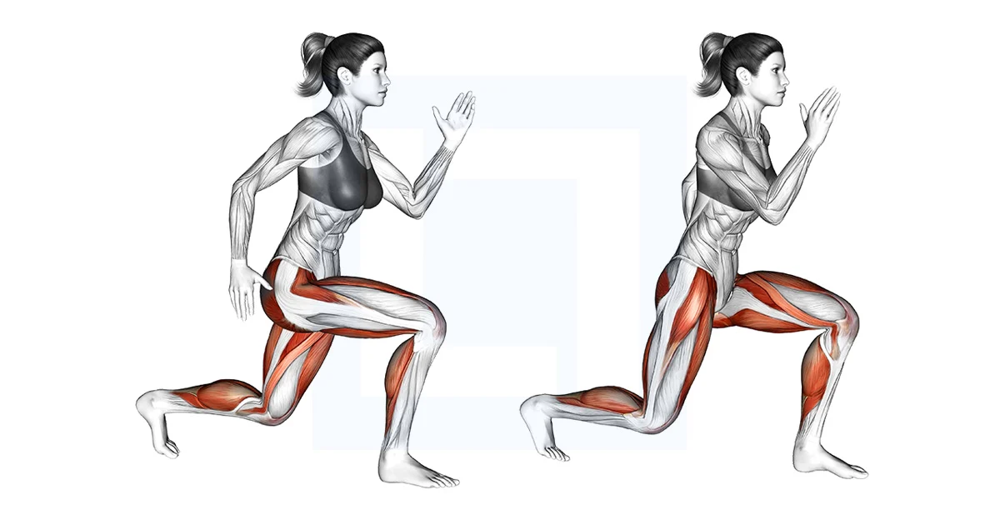
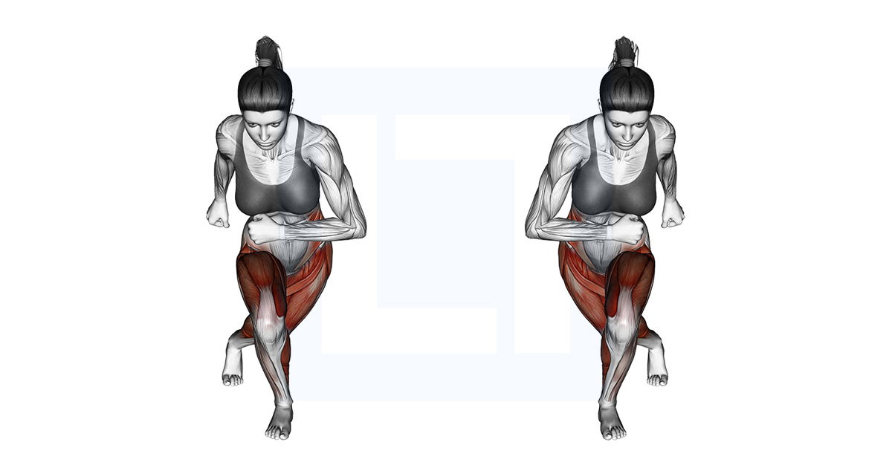
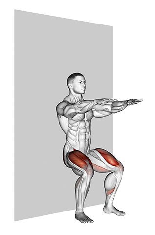

Overview: No equipment on leg day? No problem.
Let's talk about:
- The best lower-body exercises for at-home workouts
- How to warm up and cool down during a lower-body strength workout
- 7 exercises to strengthen your lower-body muscles
Warm-up (1 min)
Your warm-up is just as important as any other exercise in your leg workout. A proper warm-up improves mobility, increases blood flow and energy, and reduces your risk of injury.
- March in place 30s
- Arm circles 15s each direction
- Neck look-left/right 6 reps
Tip: Keep shoulders down and breathe through the nose.
7 Exercises to Try During Your Next Leg Workout
1) Classic Squats
Muscles worked: Quads, glutes, core

- Start with your feet shoulder-width apart, hands together in front of chest.
- Hinge at hips and bend knees to lower toward the floor.
- Drive up through mid-foot; squeeze glutes at the top.
2) Forward to Reverse Lunges
Muscles worked: Glutes, hamstrings, quads

- Stand hip-width. Step forward, drop back knee, torso slightly forward.
- Push through front foot, step back with the other leg into reverse lunge.
- Push through front foot to return to start.
- Complete reps on one side, then switch.
Pro tip: If unsteady, hold chest with both hands or grip a desk edge, and slow down.
3) Single-Leg Squat Reach
Muscles worked: Glutes, hamstrings, calves

- 1.Stand on one foot with the same arm raised straight up overhead.
- 2.Bend at your hips and reach the overhead arm toward the floor. Raise one leg behind you and your other arm out to the side.
- 3.Reach your hand to the inside of your standing foot.
- 4.Slowly return to the upright position and repeat.
- 5.Complete all reps on one side before switching to the other side.
4) Step-Ups
Muscles worked: Quads, hamstrings, glutes

- Stand upright in front of a step with your arms at your sides and feet shoulder-width apart.
- Place one foot up onto the step, bending your knee.
- Step up by pushing down on your front foot, keeping your knee in line with the first and second toes.
- Step back down to the start position and repeat.
- Complete all reps on one side before switching to the other.
Pro tip: You can perform Step-Ups on the bottom step of a staircase or using another sturdy object.
5) Split Jumps
Muscles worked: Glutes, quads, hamstrings, calves

- Stand upright in a split stance with your arms at your sides.
- Lower your body toward the floor, bending at the hips and knees and leaning your torso slightly forward with your weight on your front leg.
- Push off your front foot and jump up off the floor.
- Land in a split squat and repeat quickly.
- Complete all reps on one side before switching to the other side.
6) Skaters
Muscles worked: Glutes, quads, hamstrings, calves

- Stand with one leg stretched out behind and across the other leg, reaching your arms to the same side.
- Push off your front leg, jumping laterally to land on the other side of your mat.
- Switch your legs and immediately jump back in the opposite direction, using your arms for momentum.
7) Wall Sit
Muscles worked: Quads

- Stand with your back flat against the wall.
- Lower your body until your knees are at 90 degrees and hold.
- Hold for 30–60 seconds, or as long as you are able.